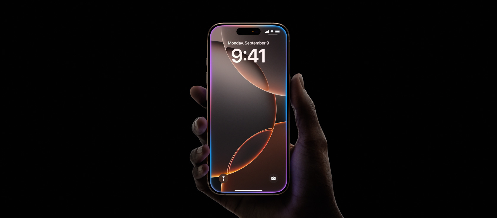
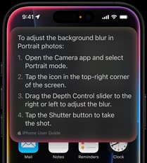

Pague seu novo iPhone em até 12 parcelas ou economize 10% nos pagamentos à vista. Saiba mais >
Explore os detalhes.
iPhone 16 Pro de 6,3 polegadas em quatro cores
Resistência. Beleza.
Titânio.A estrutura do iPhone 16 Pro é em titânio Grau 5 com um novo acabamento por microjateamento. Como o titânio tem uma das melhores relações resistência-peso entre os metais, os modelos são superleves e incrivelmente resistentes.O iPhone 16 Pro vem em quatro cores lindas, incluindo a nova titânio-deserto.
O design interno ganhou atualizações. A subestrutura térmica 100% feita em alumínio reciclado e otimizações no vidro traseiro dissipam mais calor. Isso traz um desempenho contínuo 20% melhor o do iPhone 15 Pro. Aproveite tudo por mais tempo. Até jogos pesados.
Controle total.
Agora, suas fotos e vídeos vão arrasar também no quesito agilidade. Com o Controle da Câmera, você tem acesso mais fácil e rápido às ferramentas e recursos. É só deslizar o dedo para ajustar as funções, como exposição ou profundidade de campo, alternar entre as lentes ou usar o zoom para enquadrar. Simples assim.
Ainda este ano, um disparador de duas etapas estará disponível no Controle da Câmera. Com um toque leve, trava o foco e a exposição automaticamente. Você pode mudar o enquadramento sem perder o foco no elemento principal.
Mixagem de Áudio.
Combinando inteligência avançada e captura de Áudio Espacial, a Mixagem de Áudio oferece três opções para você definir a maneira como as vozes entram nos vídeos. Quer diminuir o som de fundo? Destacar as vozes de quem está na cena? Escolha uma opção e acerte o volume no ponto que quiser após gravar o vídeo.
No Quadro
Esta opção destaca as vozes de quem está em cena, separando das conversas de quem não aparece na imagem durante a gravação.
Estúdio
As vozes parecem ter sido gravadas em um estúdio profissional, com isolamento acústico. Ideal para vlogs e podcasts. A impressão é de que o microfone está próximo de quem fala, mesmo se o iPhone estiver a alguns metros de distância.
Cinema
Todas as vozes são agrupadas e consolidadas em primeiro plano, igual ao som dos filmes.
Jogos.
Uma nova luz, sem sombra de dúvidas.O traçado de raios acelerado por hardware é até duas vezes mais rápido no chip A18 Pro. O visual dos jogos ganha vida, com gráficos mais naturais e iluminação realista.
E o Modo de Jogo do iOS 18 melhorou a taxa de quadros constantes e o tempo de resposta dos controles sem fio e dos AirPods.
Até 4 horas a mais de bateria. 🤘🏻⚡️
O iPhone 16 Pro dá um salto imenso na duração da bateria. Como? Otimizamos o design interno para acomodar baterias maiores que, junto com o chip A18 Pro, oferecem eficiência energética incrível, mesmo com tantos recursos novos.
Até
33 horasde reprodução de vídeo no iPhone 16 Pro Max
Com o novo carregador MagSafe, a recarga sem fio é mais rápida até 50% em cerca de 30 minutos. São até 25W quando conectado a um adaptador de energia de 30W ou superior.
Até
27 horasde reprodução de vídeo no iPhone 16 Pro
Assista a For All Mankind no app Apple TV com uma assinatura.
Feito para Apple Intelligence.
Disponível em inglês dos EUA.
O iPhone 16 Pro foi projetado para a Apple Intelligence, o sistema de inteligência pessoal que ajuda você a escrever, se expressar e fazer de tudo facilmente. Com proteções de privacidade revolucionárias, você tem a segurança de que ninguém vai acessar seus dados, nem mesmo a Apple.
Com novos superpoderes, a Siri ficará mais capaz e relevante.
O reconhecimento de contexto pessoal dá à Siri maneiras únicas de ajudar você. Precisa do número do passaporte para reservar um voo? A Siri encontra o que você procura sem comprometer sua privacidade.
Não sabe como fazer algo no iPhone, como ajustar o nível de desfoque do fundo em um retrato? A Siri conhece tudo dos produtos Apple e pode oferecer instruções detalhadas em instantes.
Uma melhor compreensão da linguagem e uma voz aprimorada deixam a comunicação com a Siri mais natural. Por exemplo, a Siri consegue entender mesmo se você se embaralhar com as palavras.
